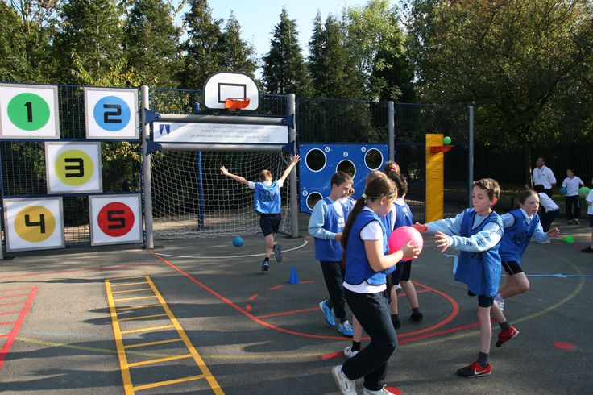

Sarana dan Fasilitas
Sekolah SMP Bustanul Ulum NU Jatirokeh menyediakan berbagai sarana dan fasilitas yang mendukung proses belajar mengajar, antara lain:
Masjid
Laboratorium Komputer dengan Perangkat Modern

Perpustakaan Lengkap dengan Koleksi Buku Terbaru
Lapangan Olahraga untuk Sepak Bola, Basket, dan Voli
Ruang Laboratorium IPA
Area Kantin yang Bersih dan Sehat
Life Skill & Kegiatan Ekstrakurikuler
Sekolah SMP Bustanul Ulum NU Jatirokeh juga menyediakan kegiatan dan life skill siswa dalam mengembangkan bakat mereka, antara lain:
Program Life Skill
- Life skill Komputer
- Life skill Hidroponik Training
- Life skill Tata Busana
- Life skill Bahasa Arab
Kegiatan Ekstrakurikuler
- Pramuka
- Drumband
- Seni Beladiri
- Rabana
Pendaftaran
Jadwal Pendaftaran
Gelombang I: 5 Januari - 30 April
Gelombang II: 1 Mei - 30 Juni
Syarat Pendaftaran
- Mengisi Formulir
- Fotokopi Ijazah SD/MI
- Fotokopi Surat Kelulusan
- Fotokopi Kartu Keluarga
- Fotokopi Akta Kelahiran
- Fotokopi NISN
- Fotokopi KIP/PKH/KKS (jika ada)